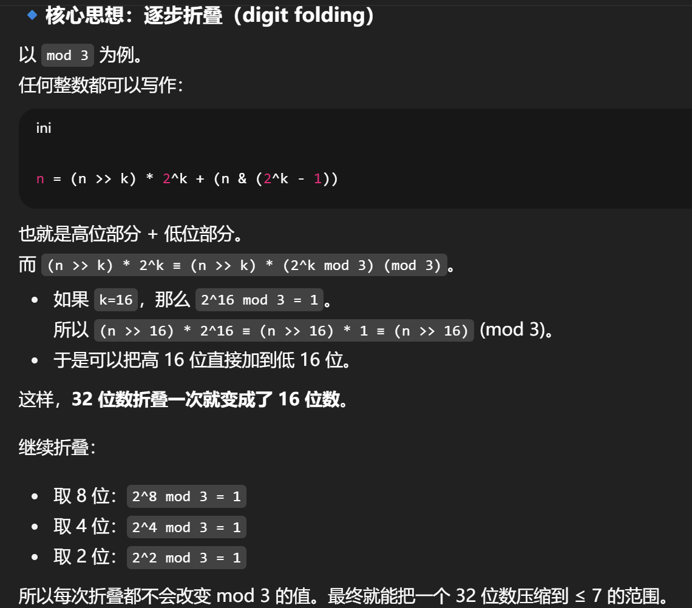

PKU 2025 Data Lab 个人解析 #
在做这份lab之前，我有做过2023年的data lab和cmu的原版lab，这两套题目差别不大，都是换汤不换药。不过今年的题目在整数部分新增了几个题目，我个人感觉出的是极其“诡异”的，颇有奥数题的感觉，似乎是有点偏离datalab题目的本意了。浮点数部分几乎与往年无变化。
本人在各个函数实现中可能采用的并不是最好的方法，使用的操作符数也不是最优的（甚至可能是相当繁琐累赘的），但是一方面这有助于我的理解，另一方面在卷操作数目上个人觉得是没有太大意义的。（其实是本人能力不够）
个人觉得有难度甚至有点"诡异"的函数有：fullAdd,bitParity,palindrome,modThree。
以下是各个puzzle的名称和简要描述：
- 位级操作函数
| 函数名 | 描述 | 难度 (Rating) | 最大操作数 (Max Ops) |
|---|---|---|---|
| bitOr(x,y) | 仅使用 ~ 和 & 实现 x|y | 1 | 8 |
| upperBits(n) | 将高 n 位填充为 1 | 1 | 10 |
| fullAdd(x,y) | 仅使用位操作实现 4 位加法 | 2 | 30 |
| rotateLeft(x,n) | 将 x 向左循环移位 n 位 | 3 | 25 |
| bitParity(x) | 如果 x 包含奇数个 0 则返回 1 | 4 | 20 |
| palindrome(x) | 如果 x 的二进制形式是回文数则返回 1 | 4 | 40 |
- 算术函数
| 函数名 | 描述 | 难度 (Rating) | 最大操作数 (Max Ops) |
|---|---|---|---|
| negate(x) | 计算 -x | 2 | 5 |
| oneMoreThan(x,y) | 如果 y 比 x 大 1 则返回 1，否则返回 0 | 2 | 15 |
| ezThreeFourths(x) | 计算 x 乘以 3/4，并向 0 取整 | 3 | 12 |
| isLess(x, y) | 如果 x < y 则返回 1，否则返回 0 | 3 | 24 |
| satMu12(x) | 将 x 乘以 2，如果溢出则饱和到 T_min 或 T_max | 3 | 20 |
| modThree(x) | 不使用 % 计算 x mod 3 | 4 | 60 |
- 浮点函数
| 函数名 | 描述 | 难度 (Rating) | 最大操作数 (Max Ops) |
|---|---|---|---|
| float_half(x) | 计算 x/2 | 4 | 30 |
| float_i2f(x) | 将整数 x 转换为浮点数 | 4 | 30 |
| float64_f2i(x) | 将双精度浮点数 x 转换为整数 | 4 | 20 |
| float_pwr2(x) | 计算 2^x | 4 | 30 |
写前须知 #
可以参考这个学长对2023年题目解析中该部分的描述，很详细全面，从文件的解压缩到程序测验的方法都有涉及。
个人解析 #
bitOr #
/*
* bitOr - x|y using only ~ and &
* Example: bitOr(6, 5) = 7
* Legal ops: ~ &
* Max ops: 8
* Rating: 1
*/
int bitOr(int x, int y) {
return ~(~x & ~y);
}注意到只有0|0的时候结果是0，其余都是1，考虑到只有1&1的时候结果是1，完全相反，那就可以先对x和y分别取反，再取和，将结果再取反即可。
upperBits #
/*
* upperBits - pads n upper bits with 1's
* You may assume 0 <= n <= 32
* Example: upperBits(4) = 0xF0000000
* Legal ops: ! ~ & ^ | + << >>
* Max ops: 10
* Rating: 1
*/
int upperBits(int n) {
int iszero = !n;
int flag = ~iszero + 1;
return (~flag & (1 << 31) >> (n + (~1)+1)); // | (flag & 0);
}这里需要用到逻辑右移和算术右移的知识。
- 逻辑右移，没有逻辑，管你什么符号位，无脑在高位补0。
- 算术右移，根据有符号数和无符号数来决定，高位补的是原本的最高位数字。
一些常用的技巧是，
- 构造Tmin（有符号数最小负值）：
1 << 31；如果想要高k位都是1、而低位都是0的数字：1 << 31 >> (k - 1)（注意是k-1位），这里是因为左移31位后最高位已经是1，再右移高位会补1；如果想要高k位都是0、而低位都是1的数字，只需要将前面的数字取反~即可。 - 构造全为1的数：
~1 + 1，原因是对1取反后得到除了最低位都是1的数，再加上1补上最低位就全为1了。其实，全为1的数是-1，相当于对1取反加一。在分类讨论中很常用（见下）。
这道题的整体思路是上述方法，但是当n=0时不适用，因此单独拿出来讨论。首先判断n是不是0，使用!n，n为0时iszero是1。然后用flag来作为分类讨论答案的掩码。这里巧妙的地方在于，当iszero为1时，flag是32位全是1的值；当iszero为0时，flag是32位全为0的值。
这样，我们返回的结果的格式就是：(flag & ans1) | (~flag & ans2)，正好对应两种情况的答案。其中ans1是n为0时，答案是0；ans2是n不为0时，答案是(1 << 31) >> (n + (~1)+1)。由于一个结果是0，可以把第一部分省去，结果不变。
fullAdd #
/*
* fullAdd - 4-bits add using bit-wise operations only.
* (0 <= x, y < 16)
* Example: fullAdd(12, 7) = 3,
* fullAdd(7, 8) = 15,
* Legal ops: ~ | ^ & << >>
* Max ops: 30
* Rating: 2
*/
int fullAdd(int x, int y) {
// 位运算作用在两个整数之间，实际上对单个位的操作是不会影响到其余位的，
// 每个位取异或是加法之后的值，而取and是是否要进位，进位带到高位，
// 所以把整体and，然后左移一位，异或，就是完成了加法操作，
// 但是又有可能进位之后还要进位，最多操作四次（取整体and），那就暴力完成
int base1 = x ^ y, up1 = (x & y) << 1;
int base2 = base1 ^ up1, up2 = (base1 & up1) << 1;
int base3 = base2 ^ up2, up3 = (base2 & up2) << 1;
int base4 = base3 ^ up3; //up4 无所谓，反正只要最后4位
int masklo4 = ~((1 << 31) >> 27);
return base4 & masklo4;
}这道题借助了ai的思路，没有自己想出。
这道题让我联想到在cf上的位运算的题目：
SUMdamental Decomposition 和 Bitwise Balancing。其实需要理解的是位运算是在位上的操作，单个位置上的运算不会对旁边的位造成影响比如担心进位之类的（当然这里说的是& | ^这些，如果是加法减法会有影响）。
对于二进制的加法，在不考虑进位的情况下，加法完成后的数字是符合异或操作的，比如1+1=10，剩下的0也是1^1的结果。而进位的数字是符合和操作的，比如刚才进位的1就是1&1的结果。
对于多位二进制数字，可以按照从低到高逐位模拟相加的方式完成加法，即先将低位取异或得到本位数字，取和得到进位数字；然后第二低位取异或，将结果再与刚刚的进位取异或，得到本位结果，与刚刚的进位取和，得到本位进位数字…这样固然可以但是在这里无法用循环完成，不合适。因此考虑并行的方式，即直接对所有位进行计算。
我们可以直接对两个数字x和y取异或，这样的结果是，对于x和y的 各个位 上取异或，也就得到了各个位上在不考虑进位情况下的加法得到的数字。结果，对x和y取和，得到 各个位 上的进位，把它左移一位，即可进行下一轮的取异或操作（第二轮加）。那要进行几轮呢？那就要看取和操作得到的进位会影响的第几轮。显然，在取和时，第四及以上位产生的进位都不会影响结果（比如x=0000 1010, y = 0000 1010,相加后得到0001 0100，第五位是1，不会影响我的四位数字计算，截断了）；而在第1到3位产生的进位则会影响后续计算。第一轮中低第123位会影响；第二轮中低第23位会影响（因为上一轮产生的进位的第一位必然是0，也就是说有进位作用在第一位上，那取and必然不会产生1）；第三轮中低第3位会影响；之后即可完成。
rotateLeft #
/*
* rotateLeft - Rotate x to the left by n
* Can assume that 0 <= n <= 31
* Examples: rotateLeft(0x87654321,4) = 0x76543218
* Legal ops: ~ & ^ | + << >> !
* Max ops: 25
* Rating: 3
*/
int rotateLeft(int x, int n) {
// 把高位n字节移到低位n字节，需要右移字节数shift2lo=32-n，
// 右移后需要消除高shift2lo符号位的影响，构造00..011，也就是11..100再取反,
// 其中前面有shift2lo个1，对1<<31右移(shift2lo-1)位
int shift2lo = 32 + (~n+1);
int mask_for_shift = ~((1 << 31) >> (shift2lo + ~1+1));
int hi2lo = (x >> shift2lo) & mask_for_shift;
int lo2hi = x << n;
return lo2hi | hi2lo;
}在注释中已经有解释了，重点是高字节右移到低字节时，由于算术右移导致的高位产生的一堆1怎么处理掉。方法是构造00..011..1的掩码取and。
bitParity #
/*
* bitParity - returns 1 if x contains an odd number of 0's
* Examples: bitParity(5) = 0, bitParity(7) = 1
* Legal ops: ! ~ & ^ | + << >>
* Max ops: 20
* Rating: 4
*/
int bitParity(int x) {
// 0 = 0, 1=1, 2=1, 3=2, 4=1, 5=2, 6=2, 7=3, 8=1, 9=2,
// 0x0000 0101 0x0101 0x00 0x0
// 0x0000 0111 0x0111 0x10 0x1
// 0x1001 0111 0x1110 0x01 0x1
int x1 = (x >> 16) ^ x;
int x2 = (x1 >> 8) ^ x1;
int x3 = (x2 >> 4) ^ x2;
int x4 = (x3 >> 2) ^ x3;
int x5 = (x4 >> 1) ^ x4;
int ans = x5 & 1;
return ans;
}实际上求的是 奇偶校验位（parity bit），也就是 x 的 所有二进制位 XOR 结果。奇数个0也就等同于奇数个1。
而XOR可以任意重排和分组（具有交换律和结合律），所以可以采用二分的思维，将32位不断折叠成16位、8位、4位、2位、1位，最终的那1位就是所有位取异或的结果。
palindrome #
/*
* palindrome - return 1 if x is palindrome in binary form,
* return 0 otherwise
* A number is palindrome if it is the same when reversed
* YOU MAY USE BIG CONST IN THIS PROBLEM, LIKE 0xFFFF0000
* YOU MAY USE BIG CONST IN THIS PROBLEM, LIKE 0xFFFF0000
* YOU MAY USE BIG CONST IN THIS PROBLEM, LIKE 0xFFFF0000
* Example: palindrome(0xff0000ff) = 1,
* palindrome(0xff00ff00) = 0
* Legal ops: ~ ! | ^ & << >> +
* Max ops: 40
* Rating: 4
*/
int palindrome(int x) {
// 考虑把x反转然后异或，反转操作：
// 不断二分并互换，第一步是归并排序的划分操作，每次划分都把相邻左右互换位置
// 不要用掩码逐个提取，采用类似于4位加法的方式，整体取出
int maskhi16 = 0xffff0000, masklo16 = 0xffff0000;
int hi16lo = ((x & maskhi16) >> 16) & masklo16;
int lo16hi = x << 16;
int trans16 = lo16hi | hi16lo;
int maskhi8 = 0xff00ff00, masklo8 = 0x00ff00ff;
int hi8lo = ((trans16 & maskhi8) >> 8) & masklo8;
int lo8hi = (trans16 & masklo8) << 8;
int trans8 = hi8lo | lo8hi;
int maskhi4 = 0xf0f0f0f0, masklo4 = 0x0f0f0f0f;
int hi4lo = ((trans8 & maskhi4) >> 4) & masklo4;
int lo4hi = (trans8 & masklo4) << 4;
int trans4 = hi4lo | lo4hi;
int maskhi2 = 0xcccccccc, masklo2 = 0x33333333;
int hi2lo = ((trans4 & maskhi2) >> 2) & masklo2;
int lo2hi = (trans4 & masklo2) << 2;
int trans2 = hi2lo | lo2hi;
int maskhi1 = 0xaaaaaaaa, masklo1 = 0x55555555;
int hi1lo = ((trans2 & maskhi1) >> 1) & masklo1;
int lo1hi = (trans2 & masklo1) << 1;
int trans1 = hi1lo | lo1hi;
int iseq = !(trans1 ^ x);
return iseq;
}相当诡异的题目，不过整体的思维和上面的fullAdd差不多，都是对所有位同时进行位操作的宏观思维。
我们的目标是得到反转后的二进制字符串，如何实现反转操作？这里使用fullAdd函数中整体位运算和bitParity二分 这两个思维的结合。我们首先将前后16位交换；然后在这两部分中，各自将前后8位交换；然后在这四部分中，各自将前后4位交换；在得到的八部分中各自交换前后2位；最后相邻两位各自交换，就得到反转结果。可以自己尝试举个例子看看正确性。
该题允许大整数，意图就是取出各个部分，构造掩码。代码中按照上述流程构造掩码、取各自的位、通过左移右移实现互换、在右移时通过and低位的掩码来消除高位产生的1。
虽说很诡异，但是整个思路是很美的，助教也是用心设计这个题目了，很牛。
negate #
/*
* negate - return -x
* Example: negate(1) = -1.
* Legal ops: ! ~ & ^ | + << >>
* Max ops: 5
* Rating: 2
*/
int negate(int x) {
return ~x+1;
}相反数：取反加一。
oneMoreThan #
/*
* oneMoreThan - return 1 if y is one more than x, and 0 otherwise
* Examples oneMoreThan(0, 1) = 1, oneMoreThan(-1, 1) = 0
* Legal ops: ~ & ! ^ | + << >>
* Max ops: 15
* Rating: 2
*/
int oneMoreThan(int x, int y) {
// y = x + 1, x+1+(~y+1)==0
// 如果x正，y负，则必为0 -> diff=1 flag=0xffffffff
int sx = (x >> 31) & 1;
int sy = (y >> 31) & 1;
int diff = (sx ^ 1) & (sx ^ sy);
int flag = diff;
int ans = x + 1 + (~y+1);
return !(flag | ans);
// return (!flag & !ans);
}y比x多1，也就是y-(x+1)=0，这是整体判断标准。考虑到正负性，如果x正，y负，答案必定是0。因此首先取出x和y的符号位，然后通过异或操作得到diff，如果diff是1，说明x正y负。接着计算ans是否是0，我们的答案需要是flag和ans同时为0。
ezThreeFourths #
/*
* ezThreeFourths - multiplies by 3/4 rounding toward 0,
* Should exactly duplicate effect of C expression (x*3/4),
* including overflow behavior.
* Examples: ezThreeFourths(11) = 8
* ezThreeFourths(-9) = -6
* ezThreeFourths(1073741824) = -268435456 (overflow)
* Legal ops: ! ~ & ^ | + << >>
* Max ops: 12
* Rating: 3
*/
int ezThreeFourths(int x) {
int mul = (x << 1) + x;
int bias = 3;
int sign = (mul >> 31);
return (mul + ((sign & bias))) >> 2;
// return (mul<0 ? mul+3 : mul) >> 2;
}这里涉及到舍入的知识点：
- 不管是有符号还是无符号，右移操作得到的值都是向下舍入的。
- 然而，正常我们定义的整数除法是向零舍入的。
- 因此，对于正数，向下舍入与向零舍入是一致的；而对于负数，我们需要加上一个偏置，来实现向上舍入，也就是完成了向零舍入。而偏置
bias = 除数 - 1，这里就是3。
这里要求严格复制C表达式的结果，那我们就不考虑溢出不溢出，直接先乘后除。乘3就是乘2加1；除以4就是右移2位。通过符号位来判断是否需要加上偏置。
isLess #
/*
* isLess - if x < y then return 1, else return 0
* Example: isLess(4,5) = 1.
* Legal ops: ! ~ & ^ | + << >>
* Max ops: 24
* Rating: 3
*/
int isLess(int x, int y) {
// x<y - x-y<0 - x+~y+1<0
// x正y负 必为0； x负y正 必为1；即符号不同答案就是x的符号位
int sx = (x >> 31);
int sy = (y >> 31);
int diff = sx ^ sy;
int flag = diff;
int ans = x + (~y+1);
return ((~flag & (ans >> 31)) | (flag & sx)) & 1;
}和上面的oneMoreThan很相似，也是通过相减的方式判断。首先也是取符号位，一正一负是最好判断的；如果同号，计算差值，看看结果的符号位是正还是负即可。
这里sx和sy都要么是32位全1，要么是32位全0的，因此不需要再对diff取反加一得到flag了，diff本身就是我们想要的flag。
satMul2 #
/*
* satMul2 - multiplies by 2, saturating to Tmin or Tmax if overflow
* Examples: satMul2(0x30000000) = 0x60000000
* satMul2(0x40000000) = 0x7FFFFFFF (saturate to TMax)
* satMul2(0x90000000) = 0x80000000 (saturate to TMin)
* Legal ops: ! ~ & ^ | + << >>
* Max ops: 20
* Rating: 3
*/
int satMul2(int x) {
// 当符号位发生变化时，发生溢出
int tmin = 1 << 31;
int tmax = ~tmin;
int x2 = x + x;
int sx0 = x >> 31;
// int sx = sx0 & 1;
int sx2 = x2 >> 31;
int diff = sx0 ^ sx2;
int flag = diff;
int sat_val = (sx0 & tmin) | (~sx0 & tmax);
return (~flag & x2) | (flag & sat_val);
}这里涉及到溢出检测的知识点：
检测补码加法和减法是否溢出:
对于减法，如果x和y的符号位不同，且x-y的符号位也与x不同，说明发生了溢出。 也就是 (sx ^ sy)&(sx ^ (sd)) == 1, 其中sd = (x - y) » 31
对于加法，如果x和y的符号位相同，且x+y的符号位与x不同，说明发生了溢出。 也就是 (~(sx ^ sy))&(sx ^ (sd)) == 1
这道题乘2就是x+x，首先肯定是同号，那只需要看看相加的结果的符号位是不是变了，如果变了就是溢出了。而溢出到tmax还是tmin则取决于x的符号位。
modThree #
/*
* modThree - calculate x mod 3 without using %.
* Example: modThree(12) = 0,
* modThree(2147483647) = 1,
* modThree(-8) = -2,
* Legal ops: ~ ! | ^ & << >> +
* Max ops: 60
* Rating: 4
*/
int modThree(int x) {
int is_3, should_eq_0, flag_for_tmin, flag_for_zero, reverse, for_zero, for_tmin;
int sign = x >> 31;
int y = (sign & (~x+1)) | (~sign & x);
int tmin = 1 << 31;
int is_tmin = !(x ^ tmin);
int ans_minus3 = ~3+1;
int ans_minus2 = ans_minus3 + 1;
// if (x == (1<<31)) return -2;
int mask = ~(tmin >> 15); // 0xffff
y = (y >> 16) + (y & mask);
y = (y >> 16) + (y & mask);
y = (y >> 8) + (y & 0xff);
y = (y >> 8) + (y & 0xff);
y = (y >> 4) + (y & 0xf);
y = (y >> 4) + (y & 0xf);
y = (y >> 2) + (y & 0x3);
y = (y >> 2) + (y & 0x3);
is_3 = !(y ^ 3);
should_eq_0 = is_3;
// if (y==3 || y==-3) y=0;
flag_for_tmin = ~is_tmin + 1;
flag_for_zero = ~should_eq_0 + 1;
reverse = (sign & (~y + 1)) | (~sign & y);
for_zero = ((~flag_for_zero & reverse));
for_tmin = (flag_for_tmin & ans_minus2) | (~flag_for_tmin & for_zero);
return for_tmin;
}
图中最后一句话应该是压缩到小于等于3的范围。这描述的是代码中对于y的操作。首先y是x的绝对值。如果x是tmin，直接返回其结果-2，因为tmin的相反数是它本身，因此这里产生一个is_tmin的标签；接着对y进行上述操作不断压缩，得到在两位二进制数字的结果（每次折叠都操作两次是把进位消除掉）。如果压缩后的值是3，那么结果应该是0，这里产生一个is_3的标签；
最后总结答案，利用上述两个标签产生两个flag，对应分类讨论的结果。首先要对正负性讨论加上y的符号，得到reverse；然后对答案是不是0进行讨论，当是0的时候应该是(flag_for_zero & 0)，可以省去，得到for_zero；最后对答案是不是-2进行讨论，得到for_tmin。最终结果就是for_tmin。
个人觉得这个函数是整个lab最最最难想和实现的函数了。我用了五十多个操作符，但是看到别的大佬有只用三十多个就完成的…
float_half #
/*
* float_half - Return bit-level equivalent of expression 0.5*f for
* floating point argument f.
* Both the argument and result are passed as unsigned int's, but
* they are to be interpreted as the bit-level representation of
* single-precision floating point values.
* When argument is NaN, return argument
* Legal ops: Any integer/unsigned operations incl. ||, &&. also if, while
* Max ops: 30
* Rating: 4
*/
unsigned float_half(unsigned uf) {
int sign = uf & (1 << 31);
int exp = (uf >> 23) & 0xff;
int frac = uf & (0x7fffff);
if (exp == 0xff) return uf;
if (exp == 0) {
frac = (frac >> 1) + ((frac & 3) == 3);
return sign | frac;
}
if (exp == 1) {
frac = ((frac >> 1) | (1 << 22)) + ((frac & 3) == 3);
return sign | frac;
}
return sign | (exp - 1) << 23 | frac;
// ******* 另外一种思路 *******
// if (exp <= 1) {
// // 把exp=1的情况归纳到非规格，直接向右移位，把隐含的1移到尾数中，相当于除以2，而指数部分是不变的
// // 涉及到舍入的问题，向偶数，如果最后两位是11需要向上舍入，如果是01需要向下舍入
// if ((frac & 3) == 3) {
// uf = (no_sign >> 1) + 1;
// } else {
// uf = (no_sign >> 1);
// }
// return uf | sign;
// }
// exp--;
// return sign | (exp << 23) | frac;
}这里涉及到向偶数舍入的知识点：
- IEEE浮点标准中，向偶数舍入是默认的方式。舍入的结果是使得最低有效数字是偶数。
- 比如1.4舍入为1，而1.5和2.5舍入为2。
- 对于二进制数字，仍然考虑舍入之后的最低位的偶数性。对于形如$XXX.YYYY100$的数字，当最后一个Y为将要舍入的位时，这种舍入方式才生效。当这个Y是0时，采用向下，把1抹去；当这个Y是1时，采用向上，使得Y变为0进位。
浮点数除以2，显然，当exp在2到254之间时直接减一；exp=0的时候，直接对尾数部分右移一位，并向偶数舍入即可；exp=255的时候，本就是inf，因此返回本身uf；exp=1的时候，减一后exp变为0，此时指数部分编码规则改变，E = 1 - Bias，虽然改变了但是E的值却不变。我们将尾数部分右移一位，同时把之前隐藏的1补上来，也就是(frac >> 1) | (1 << 22)，这样的效果其实就是：原来是1.xxxxx，现在变成了0.1xxxxx，也就是整体右移了，除以了2。
在另一种思路中，将exp=1纳入到非规格中，采用上述思想直接右移并考虑向偶数舍入。
这里舍入判断的就是低两位是不是0b11，如果是就要进位。
float_i2f #
/*
* float_i2f - Return bit-level equivalent of expression (float) x
* Result is returned as unsigned int, but
* it is to be interpreted as the bit-level representation of a
* single-precision floating point values.
* Legal ops: Any integer/unsigned operations incl. ||, &&. also if, while
* Max ops: 30
* Rating: 4
*/
unsigned float_i2f(int x) {
// 特殊判断，如果x=0、tmin直接返回，因为找不到除了符号位之外的1
int tmin = 1 << 31;
int sign, first1 = 0, frac, frac_mask, exp, out, idx;
if (x == 0) { return 0; }
if (x == tmin) { return (0xcf << 24); }
sign = tmin & x;
/*
* // 把符号位置为0，然后从左往右找到一个1的位置 ERROR!!!
* // x &= ~tmin; ERROR!!!
* 这里应该是x取相反数，不是简单的修改符号位
*/
if (sign >> 31) { x = -x; }
for (idx = 31; idx >= 0; idx--) {
if ((x >> idx) & 1) {
first1 = idx;
break;
}
}
// 现在已有的是2^(first1)，bias=127，则可以求E
exp = 127 + first1;
/*
* 接下来需要得到尾数
*
* 这里考虑的方式是，把frac的23位直接放到低23位上，这是最终目标；
* 方法是，首先把找到的first1左移到最高位，隐含的1在最高位，然后再右移8位，此时1在第24位（1-based）；
* 那么就可以用掩码0x7fffff取出低23位。
* 但是考虑到如果原来的frac长于23位，会涉及到进位的问题，
* 那就把x要右移出去的8位提取出来，如果大于0x80，或者恰好是0x80且已经取出来的23位的frac的最低位是1，都需要向偶数舍入；
* 这里舍入可能进位，导致frac的第24位变成1，如果这样，重新用掩码取出来frac，并把exp加1；
* (事实上，这里只有当frac的23位全为1时才会进位导致24位变为1)
* 原因是相当于frac又右移了一位，除以2，需要exp+1来弥补
*/
x <<= (31 - first1);
frac_mask = 0x7fffff;
frac = (x >> 8) & frac_mask;
out = x & 0xff;
if (out > 0x80 || (out == 0x80 && frac & 1)) { frac += 1; }
if (frac >> 23) {
frac = frac & frac_mask;
exp++;
}
return sign | (exp << 23) | frac;
}解析都在代码注释中，也涉及到向偶数舍入。
关于注释中：
这里舍入可能进位，导致frac的第24位变成1，如果这样，重新用掩码取出来frac，并把exp加1； (事实上，这里只有当frac的23位全为1时才会进位导致24位变为1) 原因是相当于frac又右移了一位，除以2，需要exp+1来弥补 这里不太好理解。为什么相当于frac又右移了一位？
因为如果进位导致24位是1，说明frac先前是全1，此时用IEEE表示法中的M就是1.11111111111111111111111，前置一个隐藏的1。然后发生进位，M变为10.00000000000000000000000。然而我们是不能支持这样表示的，这个M已经是2了，我们只能表示[1,2)之间的尾数。那怎么办？我们把这个2乘到阶码里面就ok了，也就是让E加了1，M除以了2，也就是M又右移了一位变成23位的全0，此时隐含的1也恰好到了第24位。
也就是说这里面所解释的“相当于frac右移了一位”是针对frac的23位全为1的特殊情况恰好满足的。
float64_f2i #
/*
* float64_f2i - Return bit-level equivalent of expression (int) f
* for 64 bit floating point argument f.
* Argument is passed as two unsigned int, but
* it is to be interpreted as the bit-level representation of a
* double-precision floating point value.
* Notice: uf1 contains the lower part of the f64 f
* Anything out of range (including NaN and infinity) should return
* 0x80000000u.
* Legal ops: Any integer/unsigned operations incl. ||, &&. also if, while
* Max ops: 20
* Rating: 4
*/
int float64_f2i(unsigned uf1, unsigned uf2) {
// 1 11 52
int tmin = 1 << 31;
int sign = uf2 >> 31;
int exp_mask = 0x7ff;
int exp = (uf2 >> 20) & exp_mask;
int E = exp - 1023;
int deltaE = 31 - E;
int frac = ((uf2 & 0xfffff) << 11/*留了最高位给隐含的1*/) | ((uf1 >> 21) & 0x7ff) | tmin;
if (E < 0) return 0;
if (E >= 31) return tmin;
frac = frac >> (deltaE/*右移31补偿，再左移E做乘法*/) & ~(tmin >> deltaE << 1/*高位右移的1去掉*/);
if (sign) frac = -frac;
return frac;
}上面写成一个deltaE的变量其实是为了缩减操作符数，否则过不了检测。。。这样导致代码可读性很低其实。
第一步取符号位，第二步取指数部分，真正的用于计算值的E=exp-1023（因为64位的偏置是1023，$ 2^{k-1}-1 $）。
第三步取尾数部分，注意尾数中必然是含有隐藏的1的，这是因为如果没有，说明指数部分为0，那么转为int之后结果只剩0了。因此我们的尾数要留出最高位给1，剩下的31位分别从uf2和uf1中取。这里可以认为，我们把原先1.xxxx变成了1放在第32位上，也就是左移了31位，因此后续我们要右移31位来弥补；此外，结果需要乘2^E，也就是左移E位，整体也就是右移了(31 - E)位；同时右移会有高位的1产生，要给消除掉。
这里最后的部分frac直接右移，没有考虑舍入问题。在浮点数的运算中，我们常常采取向偶数舍入的方式；而在浮点数转为整数的过程中，常常直接截断。这是因为我们想要向零舍入。
强制类型转换中的舍入：
- int -> float: 数字不会溢出，但是有可能被向偶数舍入。
- int/float -> double: 能保留精准的数值。
- double -> float: 可能会溢出；也可能被向偶数舍入。
- float/double -> int: 值会向零舍入。
float_pwr2 #
/*
* float_pwr2 - Return bit-level equivalent of the expression 2.0^x
* (2.0 raised to the power x) for any 32-bit integer x.
*
* The unsigned value that is returned should have the identical bit
* representation as the single-precision floating-point number 2.0^x.
* If the result is too small to be represented as a denorm, return
* 0. If too large, return +INF.
*
* Legal ops: Any integer/unsigned operations incl. ||, &&. Also if, while
* Max ops: 30
* Rating: 4
*/
unsigned float_pwr2(int x) {
/*
* 单精度，
* 最小非规格：2^-23 * 2^(1-127) = 2^-149
* 最大非规格：（1-e）* 2^(1-127) = 2^-126
* 也即只要x<-149，就是0；-149<=x<-126，就是非规格，直接左移x-149位
*
* 最小规格：(1+2^-23) * 2^(1-127) = 2^-126+2^-149
* 最大规格：(2-e) * 2^(254-127) = (2-e) * 2^127
* 只要x>=128，就是inf，0x7f800000
* 我们本身就知道规格化的指数部分的范围，-126 ~ 127
*
*
*/
if (x < -149) {
return 0;
} else
if (x >= -149 && x <= -127) {
return (1 << (x + 149));
} else
if (-126 <= x && x <= 127) {
return (x + 127) << 23;
} else
// if (x >= 128)
{
return 0x7f800000;
}
}考察的是非规格和规格化数字的形式和范围，在知乎中看到一个很清晰的阐述：
实际分四种情况：
- 情况一，都是0：
……
2^-150的二进制表示为0|00000000|00000000000000000000000
- 情况二，阶码0:
2^-149的二进制表示为0|00000000|00000000000000000000001
2^-148的二进制表示为0|00000000|00000000000000000000010
2^-147的二进制表示为0|00000000|00000000000000000000100
……
2^-129的二进制表示为0|00000000|00100000000000000000000
2^-128的二进制表示为0|00000000|01000000000000000000000
2^-127的二进制表示为0|00000000|10000000000000000000000
- 情况三，阶码非0：
2^-126的二进制表示为0|00000001|00000000000000000000000
2^-125的二进制表示为0|00000010|00000000000000000000000
2^-124的二进制表示为0|00000011|00000000000000000000000
……
2^0 的二进制表示为0|01111111|00000000000000000000000
2^1 的二进制表示为0|10000000|00000000000000000000000
……
2^127 的二进制表示为0|11111110|00000000000000000000000
- 情况四，无穷大：
2^128 的二进制表示为0|11111111|00000000000000000000000
2^129 的二进制表示为0|11111111|00000000000000000000000
此外，我们也知道规格化数字的E的值的范围是-126到127，可以直接作为该函数的一个if分支使用。至于分支内部考虑清楚再写就不会出错，可以举一些例子待入。